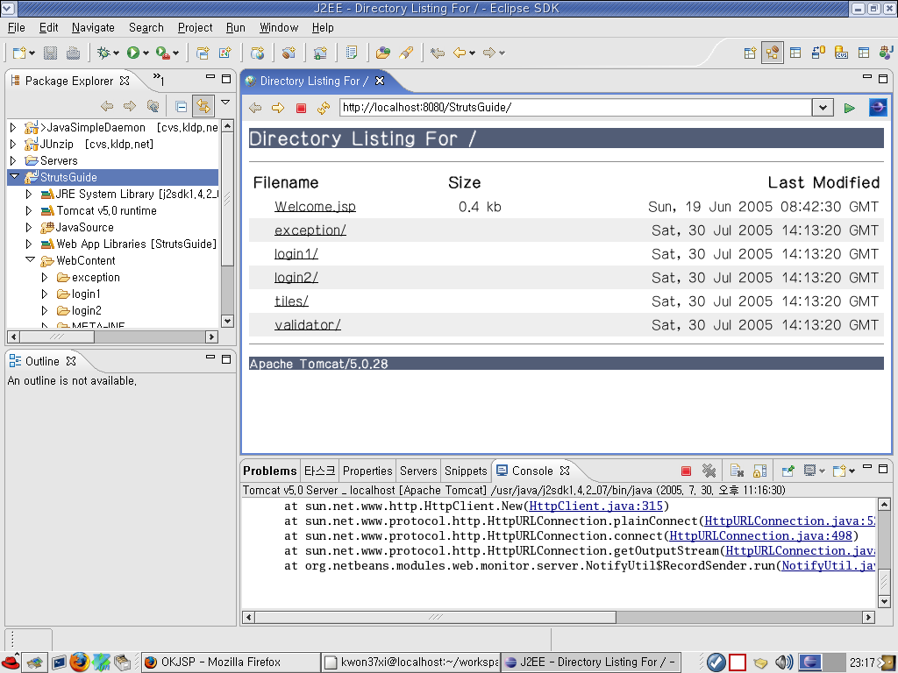
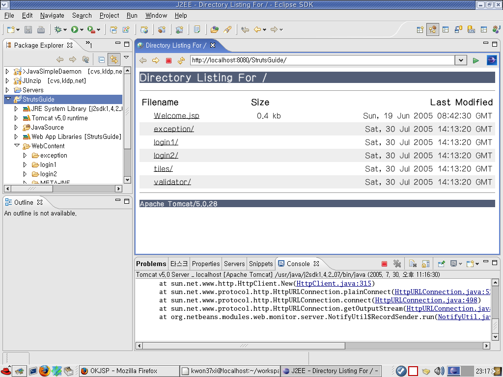

오늘인가? 암튼.. 미국시간으로 7월 29일 Eclipse Web Tools Platform 0.7 정식이 출시되었다.
그동안 NetBeans에 한참 밀렸던 Web+EJB 개발툴의 정식 버전이 나오면서, 이제 본격적으로 NetBeans와 기능 대 기능 별로 맞짱을 뜰 수 있게 된것이다.
아주 잠깐 써본 결과로는, 역시나.. 웹 개발쪽은 NetBeans에 비해 그 기능이 좀 딸린다. 흠.. 거의 2년을 개발한걸로 알고 있는데.. 쫌 그렇다..
유일하게 더 나은 기능은 Snippet 정도.. 이건 원래 MyEclipse에 있는 기능이다. 그리고.. 별로 구현하기 어려운 것도 아닌거 같다.
MyEclipseIDE를 지금까지 개발에 썼는데, WTP 이건 아무리 봐도 MyEclipseIDE에서 상당량의 소스를 기증받은 것 같다. 둘이 너무 비슷하다..
하지만, 순수 자바 개발 측면에서 Eclipse가 NetBeans를 압도하기 때문에 MVC 패턴 기반으로 웹개발이개발로 이동하고 있는 현 상황에서 볼 때, Eclipse+WTP 가 NetBeans 보다 더 강력하다고, 나는 결론 내릴 수 밖에 없다.
Fedora Core 3 Linux에서 Eclipse 3.1 + WTP 0.7을 깔고 잠깐 실행시켜 본 화면.

참고 : 위에 보면 톰캣 실행화면에 예외가 발생했는데, 그것 넷빈즈 때문이다. 넷빈즈는 톰캣 바이너리에 HTTP요청을 분석하는 모듈을 장착해서 HTTP요청을 가로채서 넷빈즈 화면에서 보거나, 아니면 동일한 요청을 다시 생성해서 보내는 방식의 테스트를 할 수 있게 해준다. - 이것은 화면 폼에 아주 많은 양의 데이터를 입력한뒤에 요청을 보내는 테스트를 여러번 반복할 경우 폼을 다 채우지 않고 넷빈즈를 이용해서 폼을 다 채워서 요청을 보낸것 처럼 흉내낼 수 있게 해서 여러번 요청을 보내면서 디버깅을 할 수 있게 도와주는, 상당히 편리한 기능이다.
근데 NetBeans가 현재 안떠 있기 때문에 저런 오류가 발생했다. 실제 사용상의 문제는 없다.
그동안 NetBeans에 한참 밀렸던 Web+EJB 개발툴의 정식 버전이 나오면서, 이제 본격적으로 NetBeans와 기능 대 기능 별로 맞짱을 뜰 수 있게 된것이다.
아주 잠깐 써본 결과로는, 역시나.. 웹 개발쪽은 NetBeans에 비해 그 기능이 좀 딸린다. 흠.. 거의 2년을 개발한걸로 알고 있는데.. 쫌 그렇다..
유일하게 더 나은 기능은 Snippet 정도.. 이건 원래 MyEclipse에 있는 기능이다. 그리고.. 별로 구현하기 어려운 것도 아닌거 같다.
MyEclipseIDE를 지금까지 개발에 썼는데, WTP 이건 아무리 봐도 MyEclipseIDE에서 상당량의 소스를 기증받은 것 같다. 둘이 너무 비슷하다..
하지만, 순수 자바 개발 측면에서 Eclipse가 NetBeans를 압도하기 때문에 MVC 패턴 기반으로 웹
Fedora Core 3 Linux에서 Eclipse 3.1 + WTP 0.7을 깔고 잠깐 실행시켜 본 화면.

참고 : 위에 보면 톰캣 실행화면에 예외가 발생했는데, 그것 넷빈즈 때문이다. 넷빈즈는 톰캣 바이너리에 HTTP요청을 분석하는 모듈을 장착해서 HTTP요청을 가로채서 넷빈즈 화면에서 보거나, 아니면 동일한 요청을 다시 생성해서 보내는 방식의 테스트를 할 수 있게 해준다. - 이것은 화면 폼에 아주 많은 양의 데이터를 입력한뒤에 요청을 보내는 테스트를 여러번 반복할 경우 폼을 다 채우지 않고 넷빈즈를 이용해서 폼을 다 채워서 요청을 보낸것 처럼 흉내낼 수 있게 해서 여러번 요청을 보내면서 디버깅을 할 수 있게 도와주는, 상당히 편리한 기능이다.
근데 NetBeans가 현재 안떠 있기 때문에 저런 오류가 발생했다. 실제 사용상의 문제는 없다.